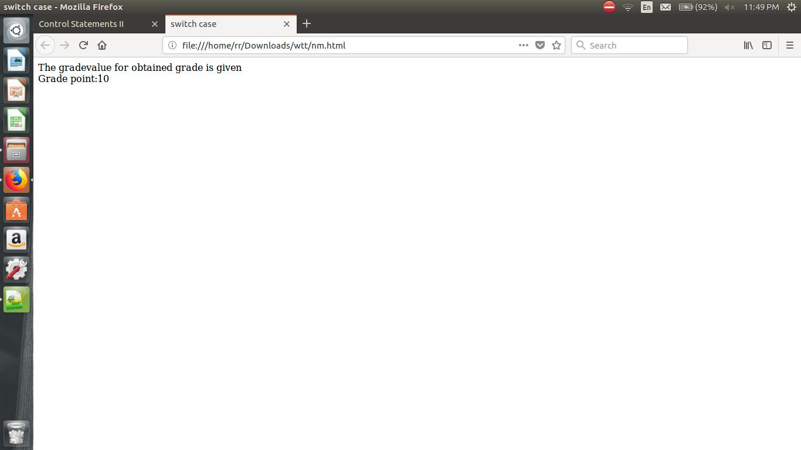

CONTROL STATEMENTS II
COUNTER CONTROL REPETITION
In counter control ,the number of times the loop executed is pre-defined.It is called definite repetition.
Counter-controlled repetition requires:
- The name of a control variable (or loop counter).
- The initial value of the control variable.
- The increment (or decrement) by which the control variable is modified each time through the loop (also known as each iteration of the loop).
- The condition that tests for the final value of the control variable to determine whether looping should continue.
Example Program:
Grade calculation
<html>
<head>
<title>counter control</title>
<script type ="text/javascript">
var grade,gradeval,total,counter,avg;
total=0;
counter=1;
while(counter<=5)
{
grade=window.prompt("enter the grade ");
gradeval=parseInt(grade);
total=total+gradeval;
counter=counter+1;
}
avg=total/5;
document.writeln("avg grade value is:\t"+avg);
</script>
</head>
<body>
</body>
</html>
Output:
FOR REPETITION STATEMENT
- The for statement conveniently handles all the details of counter-controlled repetition with a control variable.
- The for statement is often called the for statement header .
- You can use a block to put multiple statements into the body of a for statement.
- The for statement takes three expressions:
- an initialization,
- a condition and
- an expression.
- The three expressions in the for statement are optional.
- The two semicolons in the for statement are required.
- The initialization, loop-continuation condition and increment portions of a for statement can contain arithmetic expressions.
- The increment of a for statement may be negative, in which case its called a decrement and the loop actually counts downward.
- If the loop-continuation condition initially is false , the body of the for statement is not performed. Instead, execution proceeds.
General Format:
for ( initialization ; loopContinuationTest ; increment )
Syntax:
for(var i=0; i<=n; i++)
for-keyword,
i-control variable name,
n-value given to control variable upto which the given condtion is true.
Example Program:
<html>
<head>
<meta charset = "utf-8">
<title>Sum of Even Integers </title>
<script>
var sum = 0;
for ( var number = 2; number <= 100; number += 2 )
sum += number;
document.writeln( "The sum of the even integers " +"from 2 to 100 is " + sum );
</script>
</head>
<body>
</body>
</html>
Note:
- JavaScript does not include an exponentiation operator. Instead, we use the Math object pow method for this purpose. Math.pow(x, y) calculates the value of x raised to the y th power.
- Floating-point numbers can cause trouble as a result of rounding errors.
- To prevent implicit conversions in comparisons, which can lead to unexpected results, JavaScript provides the strict equals ( === ) and strict does not equal ( !== ) operators.
Output:
SWITCH MULTIPLE-SELECTION STATEMENT
Use the switch statement to select one of many code blocks to be executed.
Switch Statement
- JavaScript provides the switch multiple-selection statement , in which a variable or expression is tested separately for each of the values it may assume.
Different actions are taken for each value.
- The CSS property list-style-type allows you to set the numbering system for the list.
Possible values include decimal (numbers—the default), lower-roman (lowercase roman numerals),
upper-roman (uppercase roman numerals), lower-alpha (lowercase letters), upper-alpha(uppercase letters), and more.
- The switch statement consists of a series of case labels and an optional default case (which is normally placed last).
When the flow of control reaches the switch statement, the script evaluates the controlling expression in the parentheses following keyword switch .
The value of this expression is compared with the value in each of the case labels, starting with the first case label.
If the comparison evaluates to true , the statements after the case label are executed in order until a break statement is reached.
- The break statement is used as the last statement in each case to exit the switch statement immediately.
- Each case can have multiple actions (statements). The switch statement is different from other
statements in that braces are not required around multiple actions in a case of a switch .
- The break statement is not required for the last case in the switch statement, because program
control automatically continues with the next statement after the switch statement
- Having several case labels listed together (e.g., case 1: case 2: with no statements between the
cases) simply means that the same set of actions is to occur for each case.
Syntax:
switch(expression)
{
case x:
code block
break;
case y:
code block
break;
default:
code block
}
How it works?
- The switch expression is evaluated once.
- The value of the expression is compared with the values of each case.
- If there is a match, the associated block of code is executed.
Example:
<html>
<head>
<title>switch case</title>
</head>
<body>
<script type="text/javascript">
var grade='A';
document.write("The gradevalue for obtained grade is given<br />");
switch (grade)
{
case 'A': document.write("Grade point:10<br />");
break;
case 'B': document.write("Grade point:9<br />");
break;
case 'C': document.write("Grade point:8<br />");
break;
case 'D': document.write("Grade point:7<br />");
break;
case 'E': document.write("Grade point:6<br />");
break;
case 'F': document.write("Grade point:5<br />");
break;
case 'G': document.write("Grade point:RA<br />");
break;
default: document.write("Unknown grade<br />")
}
document.write("");
</script>
<p></p>
</body>
</html>
Output:

DO..WHILE REPETITION STATEMENT
The do ... while statement tests the loop-continuation condition after the loop body executes—therefore, the loop body always executes at least once.
Do/While Loop:
The do/while loop is a variant of the while loop. This loop will execute the code block once, before checking if the condition is true, then it will
repeat the loop as long as the condition is true.
Syntax:
do {
code block to be executed
}
while (condition);
Example:
The example below uses a do/while loop. The loop will always be
executed at least once, even if the condition is false, because the code block
is executed before the condition is tested:
<html>
<head>
<title>dowhile</title>
</head>
<body>
<h2> Output</h2>
<script>
var fact,i;
fact=1;
i=1;
do{
fact=fact*i;
i=i+1;
}while(i<=5)
document.writeln("Factorial value is:\t"+fact);
</script>
</body>
</html>
Do not forget to increase the variable used in the condition, otherwise
the loop will never end!
Output:
BREAK AND CONTINUE STATEMENT
The break statement "jumps out" of a loop.
The break statement, when executed in a repetition statement, causes immediate exit from the statement.
Execution continues with the first statement after the repetition statement.
The continue statement "jumps over" one iteration in the loop.
The continue statement, when executed in a repetition statement, skips the remaining statements in the loop body and proceeds with the next loop iteration.
In while and do ... while statements, the loop-continuation test evaluates immediately after the continue statement executes.
In for statements, the increment expression executes, then the loop-continuation test evaluates.
Break Statement:
You have already seen the break statement used in an earlier
chapter of this tutorial. It was used to "jump out" of a switch() statement.
The break statement can also be used to jump out of a loop.
The break statement breaks the loop and continues executing the code after
the loop (if any):
Example
<html>
<body>
<p>A loop with a break when i==5.</p>
<p id="demo"></p>
<script>
var text = "";
var i;
for (i = 0; i < 10; i++) {
if (i === 5) { break; }
text += "The number is " + i + "<br>";
}
document.getElementById("demo").innerHTML = text;
</script>
</body>
</html>
Output:
Continue Statement:
The continue statement breaks one iteration (in the loop), if a specified
condition occurs, and continues with the next iteration in the loop.
This example skips the value of 3:
Example
<html>
<body>
<p>A loop which will skip the step where i ==3 and continue.</p>
<p id="demo"></p>
<script>
var text = "";
var i;
for (i = 0; i < 10; i++) {
if (i === 3) { continue; }
text += "The number is " + i + "<br>";
}
document.getElementById("demo").innerHTML = text;
</script>
</body>
</html>
Output:
LOGICAL OPERATORS
JavaScript provides logical operators that can be used to form more complex conditions by combining simple conditions. The logical operators are
- && (logical AND)
- || (logical OR)
- ! (logical NOT, also called logical negation)
logical AND operator
The && operator is used to ensure that two conditions are both true before choosing a certain path of execution.
JavaScript evaluates to false or true all expressions that include relational operators, equality operators and/or logical operators.
use:
if(a>=5 &&b<=10)
c=a+b;
logical OR operator
The || (logical OR) operator is used to ensure that either or both of two conditions are true before choosing choose a certain path of execution.
The && operator has a higher precedence than the || operator. Both operators associate from left to right.
An expression containing && or || operators is evaluated only until truth or falsity is known. This is called short-circuit evaluation .
use:
if(gradeval==10 || grade='s')
cgpa=10;
logical NEGATION operator
JavaScript provides the ! (logical negation) operator to enable you to "reverse" the meaning of a condition
(i.e., a true value becomes false , and a false value becomes true ).
The logical negation operator has only a single condition as an operand (i.e., it is a unary operator).
The logical negation operator is placed before a condition to evaluate to true if the original condition (without the logical negation operator) is false .
The logical negation operator has a higher precedence than the equality operator.
use:
if(a!=5)
print 'a' value;
Most nonboolean values can be converted to a boolean true or false value.
Nonzero numeric values are considered to be true .
The numeric value zero is considered to be false .
Any string that contains characters is considered to be true .
The empty string (i.e., the string containing no characters) is considered to be false .
The value null and variables that have been declared but not initialized are considered to be false .
All objects (e.g., the browser’s document and window objects and JavaScript Math object) are considered to be true .